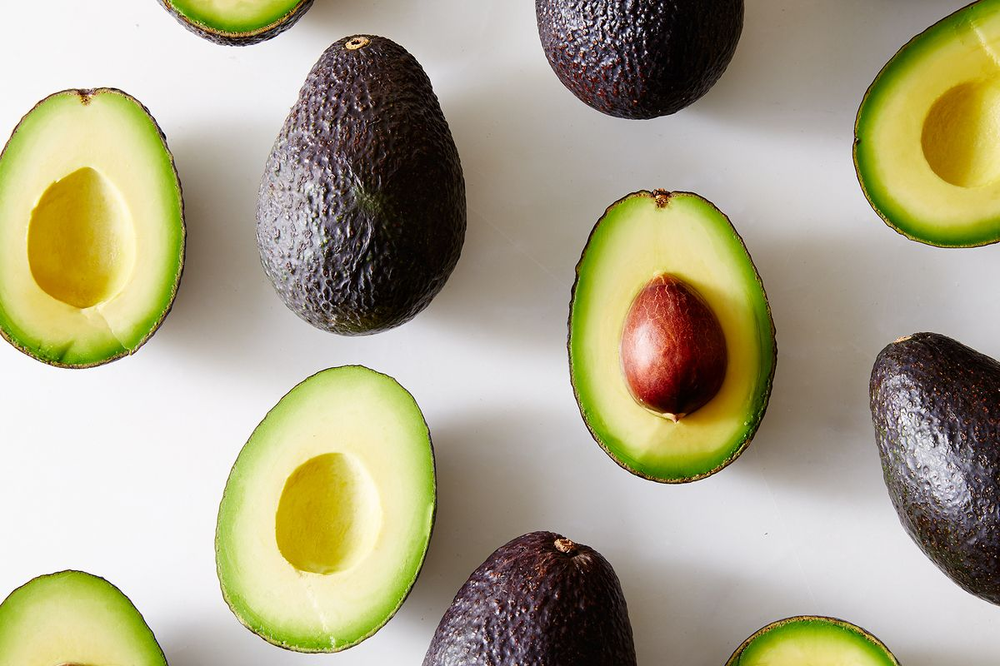

Programming project
Home
Data visualisation
Sources
Dewi Mooij 10752978
Avocado consumption and health perception in Europe

Text sources:
12 proven benefits of avocado
Good and bad fats explained
Data sources:
Avocado import/export EUROSTAT
Avocado production FAOSTAT
Perceived health status OECD
Minor programming University of Amsterdam 2018